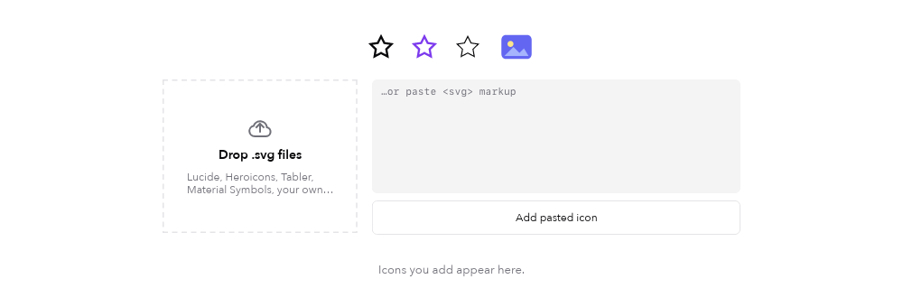

Components
Icons
The examples below come from the native Catalog. Preview images are rendered by the toolkit, not recreated in HTML. They do not demonstrate native input or desktop blur.
Gallery
01 / 03Original drawings on a 24-unit grid. They follow the theme's text colour.
How to use Rust source
icon(Icon::Search)Catalog excerpt: names such as app, callbacks and helper functions belong to the example. View the complete source or start with the runnable app guide.
Your own SVG icons
02 / 03Load any icon set or drawing. Icons follow the theme colour; multi-colour art can keep its colours.


How to use Rust source
let star = SvgIcon::parse(include_str!("star.svg"))?;
svg_icon(&star).size(24.).color(ColorToken::Primary)
// A whole icon-set folder, by file name:
let (lucide, _skipped) = IconSet::from_dir("assets/lucide")?;
lucide.icon("arrow-left").unwrap().size(16.)Catalog excerpt: names such as app, callbacks and helper functions belong to the example. View the complete source or start with the runnable app guide.
Size, colour and stroke
03 / 03Icons scale crisply and take any colour token or hex value.

How to use Rust source
icon(Icon::Bolt).size(32.).color(ColorToken::Primary)
icon(Icon::Settings).size(32.).stroke(1.)Catalog excerpt: names such as app, callbacks and helper functions belong to the example. View the complete source or start with the runnable app guide.
Try it in the native Catalog
From the repository root. Static snapshots cannot demonstrate editing, keyboard focus, scrolling or animation.
cargo run --release --locked \
--features native-gpu,native-desktop \
--example catalog -- --page iconsAPI reference
Properties and behavior documented by this Catalog page.
| API | Behavior |
|---|---|
icon(Icon::…) | A vector glyph element (default 20 px). |
.size(px) / .color(c) / .stroke(w) | Scale, colour and line weight. |
.accessible_label(text) | Announce a meaningful icon. |
ALL_ICONS | Every glyph, for galleries and pickers. |
SvgIcon::parse(markup) / ::load(path) | Any SVG icon or drawing. |
svg_icon(&svg) | .size / .color / .stroke / .keep_colors(true) |
IconSet::from_dir(path) | A folder of .svg files, by name: set.icon("arrow-left"). |